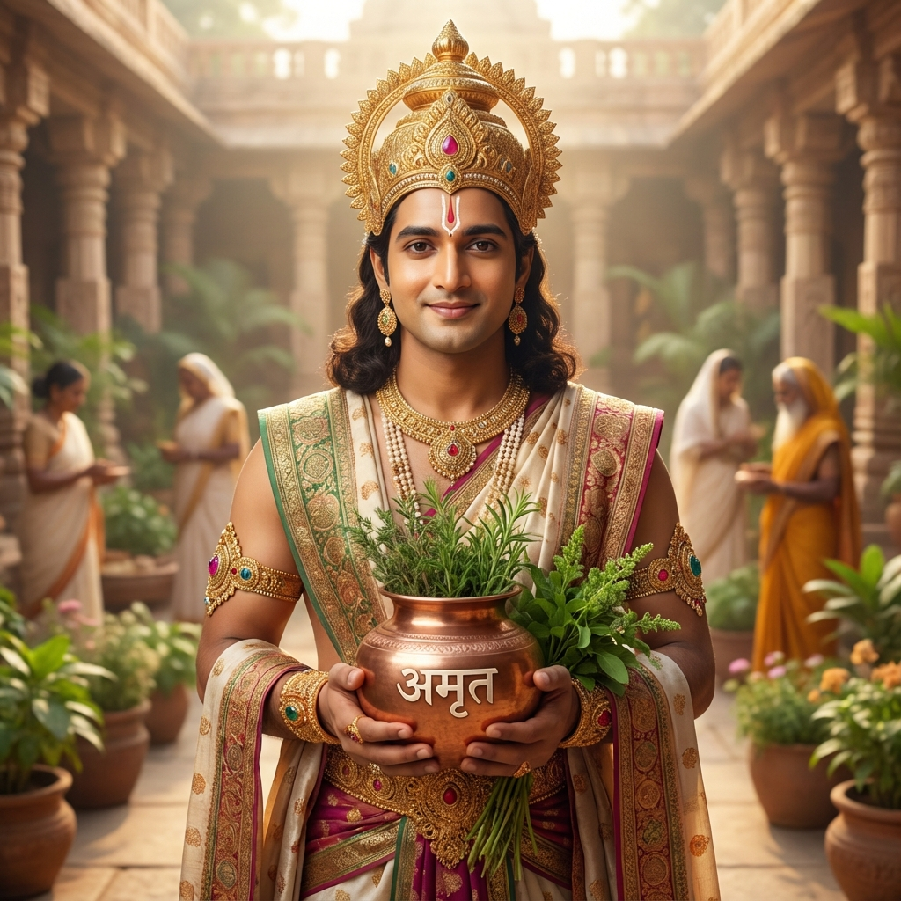

Sacred Healing
Ayurveda Ayatanam is more than just a hospital—it is a sanctuary where one can experience the essence of Ayurveda, guided by ancient wisdom and divine knowledge. We revere Ayurveda as an embodiment of Lord Ganesha, whose sacred name in the Ganesha Sahasranama is "Ayurveda" (ॐ श्री आयुर्वेदाय नमः).
This reverence is at the heart of everything we do, as our goal is to explore and impart the profound knowledge (yatha taha jnyana) of Ayurveda as it is found in the Vedas, Puranas, and classical Ayurvedic texts (Samhitas).
Know More
